Matrices of Boolean Nets
When studying the boolean networks on the last post I wondered what the state update rule would look like as a matrix. These things can always be represented by matrices. Working out how to do it led to some nice links to quantum computing and category theory.
A few things led me to the way to construct the boolean net matrices. I knew that representation theory says it should be so but that doesn’t make it easier to construct them. Trial and error didn’t really get me anywhere. Then I found this article describing a simple boolean matrix construction which reminded me that this is deeply related to quantum computing qubit circuit construction that I already know something about, but without all the annoying quantum restrictions.
Boolean algebra
The thing to notice is that a bit (\(0\) or \(1\)) can be represented as a vector: \[ F = \begin{pmatrix} 1 \\ 0 \end{pmatrix} \] and \[ T = \begin{pmatrix} 0 \\ 1 \end{pmatrix} \]
An identity (NoOp) gate is then \[ \begin{pmatrix} 1 & 0 \\ 0 & 1 \end{pmatrix} \] and a NOT gate is \[ \begin{pmatrix} 0 & 1 \\ 1 & 0 \end{pmatrix} \].
To operate on multiple bits at the same time we tensor them together by applying the Krondecker product. So the boolean number \(01_b\) is equal to \(F \otimes T\), for example. We end up with a vector of length \(2^n\) with an entry for each possible value of the binary number, in order1.
1 Note the most significant bit is on the left in these expressions. The ordering tripped me up a couple of times.
Higher order operators are easier here than in the quantum case. We can just write out the result that we want as columns in a matrix, where each column represents \(00_b\), \(01_b\), \(10_b\), \(11_b\), respectively. So for example the \(AND\) gate is simply: \[ AND = \begin{pmatrix} 1 & 1 & 1 & 0 \\ 0 & 0 & 0 & 1 \end{pmatrix} \].
When we multiply a pair of binary digits (tensored together) by this matrix then we get the answer we want. Example: $ AND * (T F) F$.
The beautiful thing is that we can then use wiring diagrams to build more elaborate calculations, like we do in quantum computing circuits. It works because this boolean algebra is an example of a symmetric monoidal category having a braiding that is essentially a SWAP operation between bits. This category allows us to compose operations by shifting bits into place with an appropriate sequence of swaps. This is very similar to the quantum computing equivalents but without the restriction to unitary (reversible) operations. Dropping this restriction means that we can give the category copy2 and discard3 operations, turning it into a copy-discard category4.
2 Also sometimes called clone, as in the no-cloning theorem.
3 Or drop or delete, as in the no-deleting theorem.
4 Also called a garbage share category but whoever thought up that name should take a deep look at themselves.
Examples like this make applied category theory such a powerful thinking tool.
Kauffman’s example
A simple circuit for Kauffman’s 3 node example is fairly easy to construct. The three operators correspond to the three truth tables, one for each node. The \(Y\) node value is cloned/copied. This is not allowed in quantum computing circuits but no problem here.
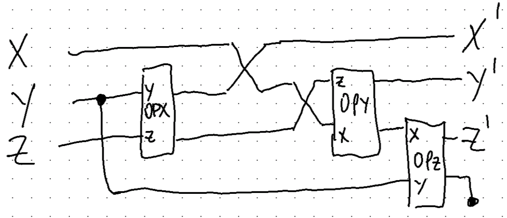
This circuit does a trick to avoid an extra copy. The copied bit is dropped at the end to make a routine with matching inputs and outputs. This allows multiple similar operations to be chained together to evolve the system.
Some more tricks are required5 to implement the swapping and shifting of registers in code but luckily I had already done something similar for the quantum computing simulator I wrote some years ago. The \(COPY\) and \(DROP\) gates were relatively easy to think through and the tensor product just worked perfectly for all these unfamiliar operations (there are no-cloning and no-deleting restrictions in quantum circuits which make things harder in that context).
5 I went back again to this paper which I found helpful to understand this process.
Of course with this simple example (and the benefit of hindsight) the matrix corresponding to this entire circuit could have been been constructed from scratch from the extended truth table. However this way the actual relations themselves are baked into the circuit. The final matrix, let’s call it \(M\), will be the same anyway. Here’s what it looks like in code (note that matrix multiplication is from the right, the opposite of the circuit diagram):
OPX = op(kauffman_truth_table[1,:])
OPY = op(kauffman_truth_table[2,:])
OPZ = op(kauffman_truth_table[3,:])
M = lift(3,3,DROP)*lift(3,3,OPZ)*lift(3,2,OPY)
*row_swap(4,2)*row_swap(4,1)*lift(3,2,OPX)
*row_swap(4,2)*lift(3,3,CLONE)*row_swap(3,2)
> 8×8 SparseMatrixCSC{Int64, Int64} with 8 stored entries:
⋅ ⋅ ⋅ ⋅ 1 ⋅ ⋅ ⋅
1 ⋅ 1 1 ⋅ ⋅ 1 ⋅
⋅ ⋅ ⋅ ⋅ ⋅ ⋅ ⋅ ⋅
⋅ ⋅ ⋅ ⋅ ⋅ ⋅ ⋅ 1
⋅ ⋅ ⋅ ⋅ ⋅ ⋅ ⋅ ⋅
⋅ 1 ⋅ ⋅ ⋅ ⋅ ⋅ ⋅
⋅ ⋅ ⋅ ⋅ ⋅ 1 ⋅ ⋅
⋅ ⋅ ⋅ ⋅ ⋅ ⋅ ⋅ ⋅Quite a lot of work went into getting that matrix mostly full of zeros!
Testing out the circuit we do get back the results from the original paper:
for state in 0:7
s = Bool.(digits(state, base=2, pad=3))
S = transform(s)
println(s => measure(M*S))
end
[0, 0, 0] => [0, 0, 1]
[0, 0, 1] => [1, 0, 1]
[0, 1, 0] => [0, 0, 1]
[0, 1, 1] => [0, 0, 1]
[1, 0, 0] => [0, 0, 0]
[1, 0, 1] => [1, 1, 0]
[1, 1, 0] => [0, 0, 1]
[1, 1, 1] => [0, 1, 1]So now the whole point of doing this wasn’t just to build the circuit in a new way. It was to use the power of linear algebra to tell us something about the network and its properties. Being a matrix we can calculate its eigenvalues and eigenvectors. If we can find eigenvalues with a value of exactly 1 then we will have found stationary points in the network, i.e. cycles.
The eigenvalues $= { _1, _2, …, _8 } $ of \(M\) turn out to be:
λ = eigvals(M)
8-element Vector{ComplexF64}:
-0.5 - 0.8660254037844388im
-0.5 + 0.8660254037844388im
0.0 + 0.0im
0.0 + 0.0im
0.0 + 0.0im
0.0 + 0.0im
0.0 + 0.0im
1.0 + 0.0imNow it just so happens that those non-zero values are the cube roots of unity. Using the fact that the cubes of the eigenvalues of a matrix are the eigenvalues of the matrix cubed then we should get all ones.
λ = eigvals(M^3)
8-element Vector{Float64}:
0.0
0.0
0.0
0.0
0.0
1.0
1.0
1.0The last 3 eigenvalues are now exactly one! So let’s look at the last 3 eigenvectors and convert them back to the corresponding states:

[measure(ν) for ν in eachcol(eigvecs(M^3)[:,6:8])]
3-element Vector{Vector{Bool}}:
[1, 1, 0]
[0, 0, 1]
[1, 0, 1]These are exactly the states which form the only cycle in the example kimatograph.
It is not coincidence that the other eigenvalues are zero. The fact that \(rank(M) < 8\) is also no coincidence. There is much more to learn about the spectral properties of these matrices.
Wolfram’s cellular automata
Once that had worked, I was interested in matrix operations for bigger boolean networks. As before we can apply the same process to Wolfram’s cellular automata which are just specialisations of the general boolean network. This network can be as big as you like. How can we go about building it systematically? This was an interesting problem to mull over and I eventually worked it out. First we can come up with a trinary operator representing the rule.
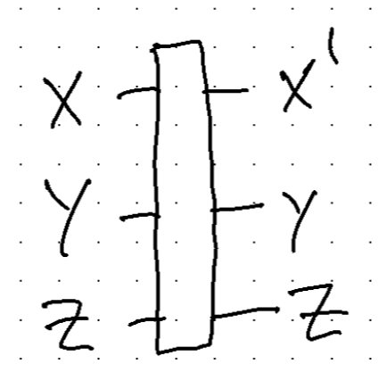
This operator has 3 inputs, two of which just pass through to the outputs. The other output is the result of the Wolfram coded rule. The reason for passing through the two outputs is to be able to chain them together easily. Of course we could just copy the values but this way seems neater. To create the complete circuit it also has to wrap around the ends to form a periodic boundary. That’s done by just copying the bottom bit to the top and the top bit to the bottom. The extra two bits are dropped at the end to make a composable operation. So we’re left with this circuit:
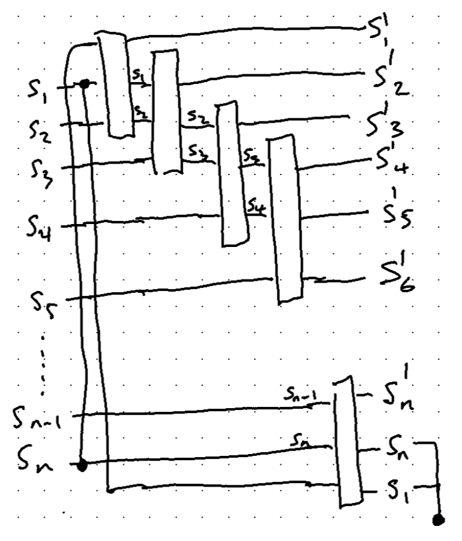
Note that there are \(n\) input states and \(n\) output states so the operation can again be chained by matrix multiplication on the left.
What does this look like in code? Something like this although I expect there are many ways to do it:
function Rule(code::Integer)
outputs = binary(code, 8)
R = zeros(Bool, 8, 8)
for k in 0:7
X,Y,Z = reverse(binary(k,3))
R[:,k+1] = transform([outputs[k+1], Y, Z])
end
sb(R)
end
function update(N, rule)
# Clone the ends and shift to top or bottom respectively
WRAP = row_shift(N+2,1,N+1)*lift(N+1,N,CLONE)*row_shift(N+1,N+1,2)*lift(N,1,CLONE)
# Build the rule gate
R = Rule(rule)
# Chain the rule N times from the left
Rᴺ = foldl(*, lift(N+2-2,i,R) for i in N:-1:1)
# Drop the last two bits
PRUNE = lift(N,N,DROP)*lift(N+1,N+1,DROP)
# Build the full circuit
PRUNE*Rᴺ*WRAP
endTook a while to get the bit order of all this right but the idea was right. I did some nice testing and got it working as it should. As a big test I used the circuit to build and run different systems and compare to existing catalogues. This was the result and I’m pretty happy with it.
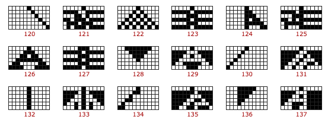
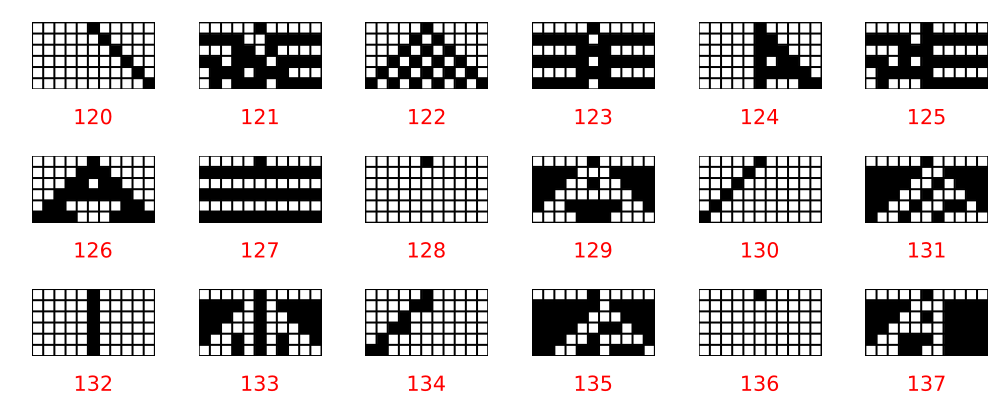
Looking at the spectra of the update matrices is pretty interesting. As a simple example we can discover eigensystem of the different rules.
In fact we can look at all the eigenvalues of the same group of rules as above. These are plots of the complex plane from (-1,1) in both axes.
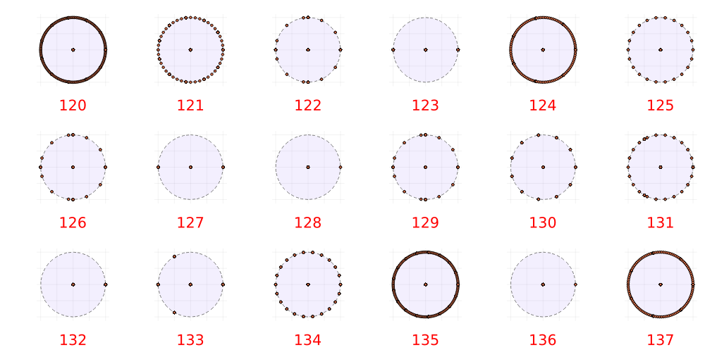
A few interesting things immediately jump out. First, every rule has zero eigenvalues and the rest are on the unit circle. This is consistent with what we saw for the simple boolean network above.
The rules with eigenvalues in $ ,0,1 $ correspond to the simplest rules: 123, 127, 128, 132, 136. In fact, rules with widely and evenly spaced eigenvalues seems to lead to simple periodic behaviour. Rules 130 and 134 are examples.
Rules 122, 126 and 129 share the same eigenvalue distributions have triangular run-in evolutions although all different in detail. Rule 131 also has uneven eigenvalues and a triangular update rule.
Rules known to be complex like 124 and 137 have a large number of eigenvalues. There can be a maximum of \(2^{11} = 2048\) eigenvalues so the natural question is if any reach this maximum? Rule 120 has many eigenvalues but the pattern is simple. I suspect that in this case the behaviour is highly dependent on the initial state.
There is a strong resemblance here with the permutation matrices and that’s not surprising. The update rules are, in a sense, permutations with degeneracies. Those degeneracies are the “spider’s legs” in the state diagram. The results suggest that those degeneracies correspond to the zero eigenvalues of the matrix. The degeneracies are zero rows in the transition matrix. Powers of the transition matrix essentially zero out rows associated with the spider’s legs of the permutations, eventually converging on the cycles of a true permutation.
The spectrum of the update rule
We can remove zero rows and the corresponding columns from the transition matrix without changing the cycle dynamics. This essentially means removing the “leaves” of the state diagram. The outer leaves are sometimes called “Eden” states because they can only be initial states and cannot be reached by any other transition. Continuing this process will result in a permutation matrix with specific cycle characteristics.
We can formalise this: let \(Q_k\) be the matrix that, when multiplied with another matrix, removes its \(k\)th row. The matrix which does this has \(n-1\) rows and \(n\) columns. To construct it, take the \(n \times n\) identity matrix, remove row \(k\) and set the \(k\)th column to zeros. The result looks something like this for the case where \(n=6\) and \(k=3\):
\[ Q = \begin{pmatrix} 1 & 0 & 0 & 0 & 0 & 0\\ 0 & 1 & 0 & 0 & 0 & 0\\ 0 & 0 & 0 & 1 & 0 & 0\\ 0 & 0 & 0 & 0 & 1 & 0\\ 0 & 0 & 0 & 0 & 0 & 1 \end{pmatrix} \]
If we have a \(n \times n\) matrix, \(M\), then multiplying it from the left by \(Q_k\) will remove one row. To remove the corresponding column it turns out that we have to multiply from the right by the transpose. So the final \((n-1) \times (n-1)\) matrix is given as $ M^{} = Q_k M Q_k^T $.
To remove multiple rows and columns, indexed as \(a,b,c,...\), just repeat the process: \(... Q_c Q_b Q_a M Q_a^T Q_b^T Q_c^T ...\). Of course, the sequence can be combined so that \(Q = ... Q_c Q_b Q_a\) and by basic matrix rules6 we have $ M^{} = Q M Q^T $.
6 \((A_1A_2...A_{k−1}A_k)^T = A_k^TA_{k−1}^T…A_2^TA_1^T\) (wiki)
This matrix operation is different from the operations we’ve seen before. It doesn’t discard bits but rather discards individual states or, more specifically, unreachable states. I’m not sure what the categorical construction is for this but it’s hard to see how it would fit on the kinds of a wiring diagram we’ve been using.
This procedure might result in more rows with all zeros. These are the new unreachable leaf states that replace the removed one. This procedure is essentially pruning the leaf states one by one until we’re left with a pure permutation matrix and its cyclic structure. This construction has the effect of removing the zero eigenvalues from the matrix \(M\).
I think that this is related to Krohn–Rhodes theory somehow. That theory relates this kind of cellular automata with actions of semigroups. I’m trying to learn about that stuff but it’s hard. There is a categorical treatment of the Krohn–Rhodes theory7 that I would like to look at. This stuff spirals off into all kinds of directions that I find fascinating but time is finite. Nevertheless it’s something to put on the todo list.
7 Wells, Charles. ‘A Krohn-Rhodes Theorem for Categories’. Journal of Algebra 64, no. 1 (May 1980): 37–45. doi.org/10.1016/0021-8693(80)90130-1.

So what? The useful thing about this is only seen when considering processes more generally. There is an argument that says that processes can be designed to naturally be attracted towards desired behaviour, wherever they may start. We might say that an particular iterative approach, akin to the update rule, might be likely to result in a stable end state (which may be cyclic but identifiably stable). This has been investigated and used in the field. For example, Barry O’Reilly work on Residuality Theory bases some his philosophy this kind of stability.
Nothing is black and white
Another interesting thing that comes out naturally from the categorial approach (and the semigroup approach actually) is that the states don’t have to be restricted to \(0\)s and \(1\)s. It turns out that not only are our update rules examples of cd-categories, they are also examples of Markov categories. The additional restriction here is that the weights of the states sum to \(1\). This means that rather than apply boolean logic to our circuits we can apply probabilistic (fuzzy) logic. Take the \(AND\) operator. In category theory this is often called the conjunction or join operator and it’s fundamental to these (cartesian) monoidal categories. In the world of probabilities this same construction represents the probability of two events occurring together. Likewise the \(OR\) operation corresponds to the probability of either event happening or both. The complement rule is the NOT operator8.
8 What we don’t have with this construction is conditionals. I think it’s possible just haven’t needed it.
The beautiful thing about these categories is that they automatically capture dependence between probabilities. Take a look at this:
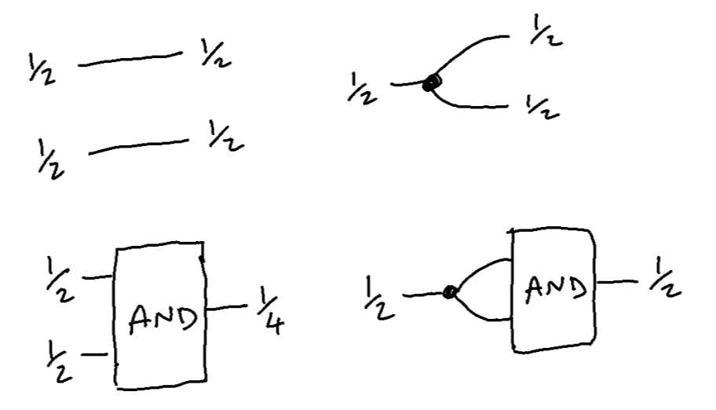
The AND gate has two inputs and they are both ½. So then why does it output ½ in one case and ¼ oin the other? The reason the outputs are different is because the COPY operation has created a dependency between them. In the first case there are two independent variables and therefore 4 possibilities \[00_b,01_b,10_b,11_b\] and hence the probability of both being 1 is 1 in 4 or ¼. In the other case, since the inputs are effectively the same variable, they necessarily have the same value so the only possibilities are \(00_b\) or \(11_b\) and therefore the probability of both being 1 is ½. I think that’s pretty nice.
Anyway, the upshot is that we can create variables as real numbers in the form \[ S = \begin{pmatrix} 1-p \\ p \end{pmatrix} \] where \(p \in [0,1]\). \(T\) and \(F\) (as defined above) correspond to the special cases where \(p=1\) and \(p=0\) respectively. The construction automatically ensures that the state elements sum to 1. The tensoring ensures that this is honoured for any number of variables.
Now that we’ve done it we can just plug real numbers into our cellular automata and see what happens:
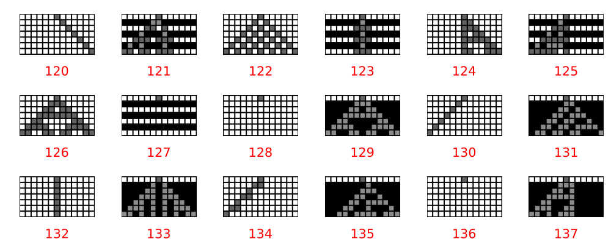
The update rule is exactly the same. It just works. In this case the initial state in each case is set to a single value of \(0.6\) in the center cell, rather than \(1\) as in the diagram above. The cells are grey-scaled, 0 is white and 1 is black, so 0.6 is a medium grey. Notice that the grey cells emanate away from the starting cell and seem to be superimposed onto a background pattern. I think this nicely shows how the update rule permeates through the cells.
There are all kinds of experiments to be done with this. What if multiple cells are initialised to 0.6 in the initial state?
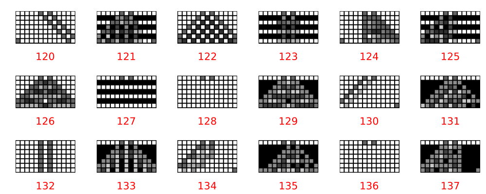
You can see how the effects of the initial state radiate and seem to interact with each other and create interference patterns.
Talking of interference patterns, this category will work on complex numbers too, a sort of analog to a quantum state. Of course, true quantum states don’t have copy and delete operators so let’s just call them complex states? Our bits will be defined this time as \[ S = \begin{pmatrix} \sqrt{1-a^2} \\ a \end{pmatrix} \] where \(a\) is complex and \(|a| < 1\). In this case their square sum to 1 and the tensor product will honour the L2 norm here too. Let’s generate the same diagrams with this new input state. Remember the update rules are still boolean matrices and haven’t changed at all.
This first one shows the magnitude of the complex states with a simple initial state of \[0.6 \times e^{2\pi √2}\]. Again a 60% magnitude but with an irrational phase:
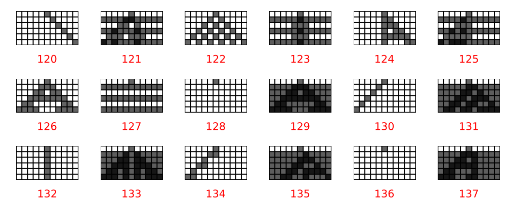
And this one shows the phases:
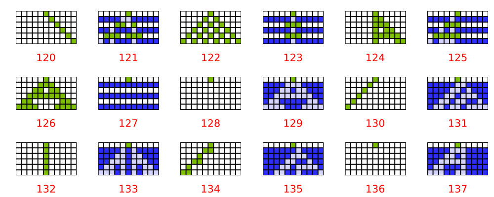
There is a very similar kind of pattern emerging from in both the magnitude and phase of the state vector. What if we have two cells set in the initial state?
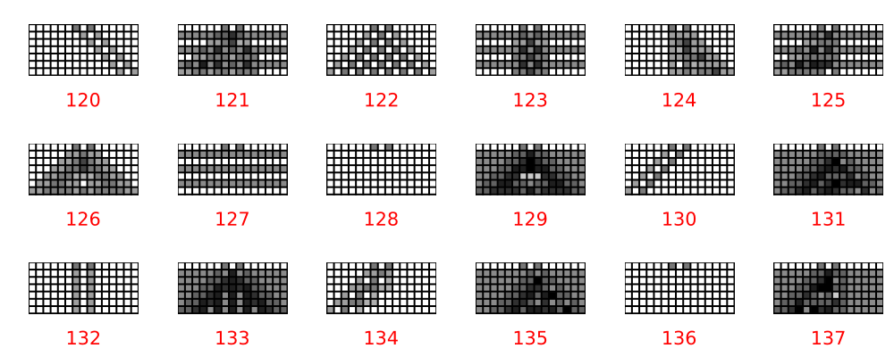
And this one shows the phases:
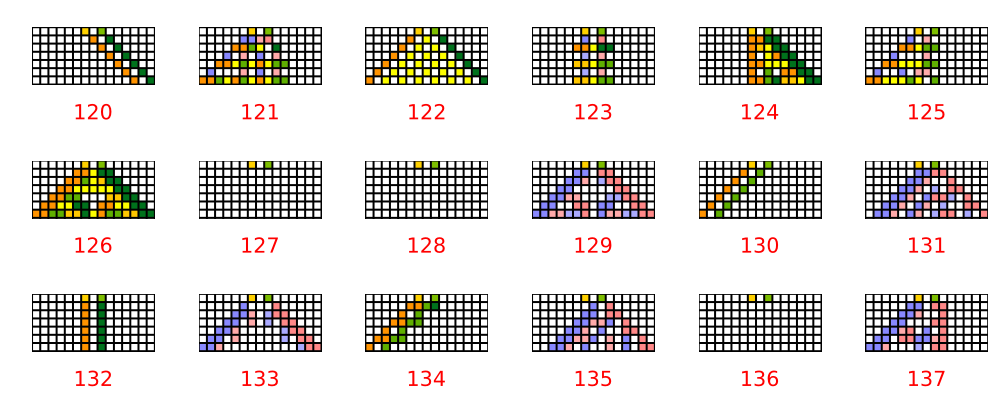
Some nice patterns emerging as the two initialised elements interfere with each other. You could play with this all day long. I haven’t looked at all on what patterns come out of this but I suspect that the phases sort of x-ray into the patterns, seeing through static or repeating background behaviour.
More questions
Some things that have occurred to me as I was doing this:
- Curious now for a deeper understanding of the Krohn-Rhodes theorem, to understand it and to see it in the light of category theory. What, if any, is the relation to signal-flow diagrams?
- What would the phase space of a probability or complex state be like as different operators are applied to them. Do they tend to go be attracted to the fixed points or do they spins about in other ways? It would be quite easy to set up a 2D (or maybe 3D is minimum?) state and just apply random operators to it and display the path. It would be quite cool if there were strange attractors hidden there somewhere.
- Intuition is telling me that we could use cycles to represent classical probabilities and “compress” deterministic algorithms to probabilistic ones. In other words, move computation from the time domain into a wider state space. I’m not sure if \(\epsilon\)-machine9 does something similar. Curious to look more at this.
- Can we construct a fourier transform operator by combining cycles of lengths \(2^k\) and working backwards from the transition matrix to a boolean network? Is there there anything like a Shor’s algorithm, for example?
- Is there such a thing as an “indivisible” permutation which would link this to probability in the way that indivisible unitary matrices link probability to Hilbert spaces? See Barandes.
9 Shalizi, Cosma Rohilla, and James P. Crutchfield. ‘Computational Mechanics: Pattern and Prediction, Structure and Simplicity’. Journal of Statistical Physics 104, no. 3/4 (2001): 817–79. doi.org/10.1023/A:1010388907793.
So what?
I spent quite a few hours on this, actually whole days, over several weeks. It’s been a fascinating journey and I’ve come away with a much deeper understanding of boolean networks and Wolfram’s cellular automata. I’ve got some additional intuition and respect about it relates to category theory and a renewed interest in the Applied Category Theory book I bought some time ago but have been slow to read. Nothing i this article is particularly useful in itself. The categorial construction of the update rules are far too inefficient to be practical but the string diagram reasoning and formalisms have become more familiar and I can see the real power. I didn’t really belive David Spivak when he said somewhere that category theory can be used even for philosophical reasoning, but I think I’m starting to see what he means. It’s a very powerful language but also formal and mathematical. That’s the sort of thing I should like, I guess. ANyway I’m going to leave it there, this write up is never ending. Glad it’s done now.